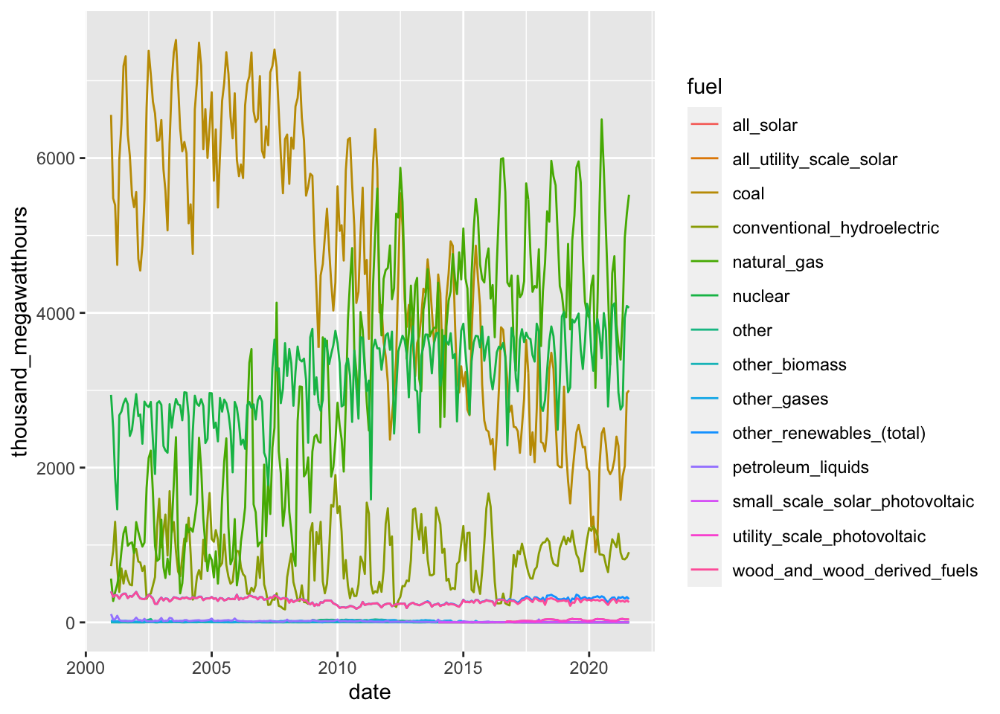
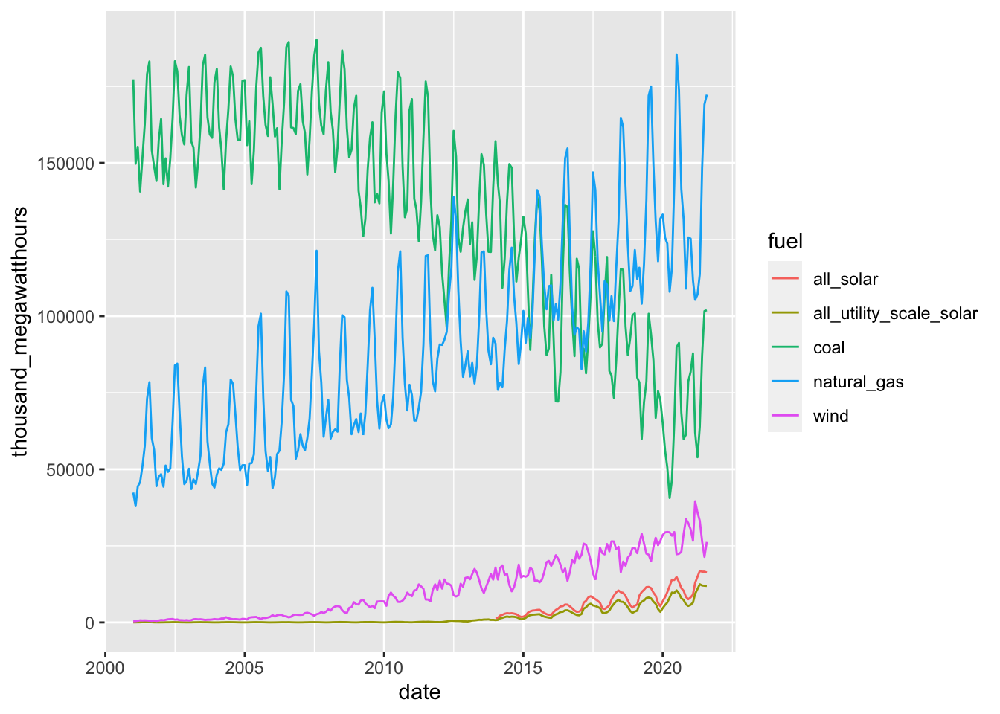
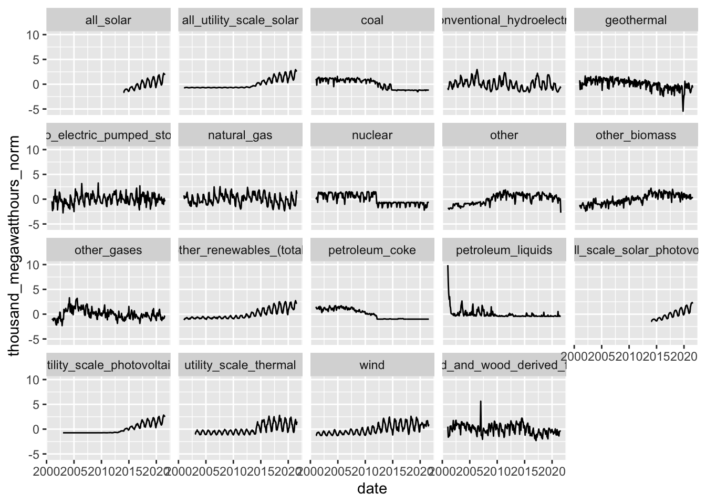
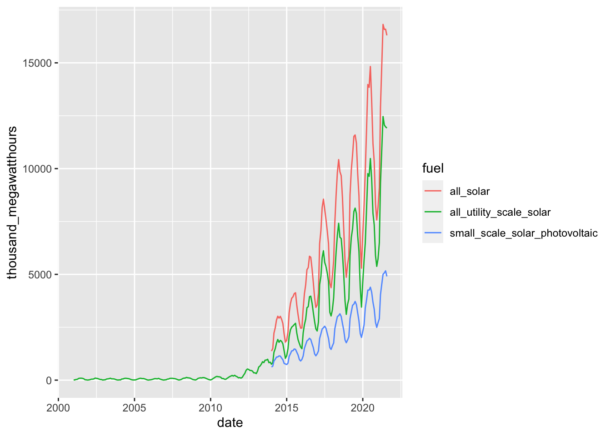
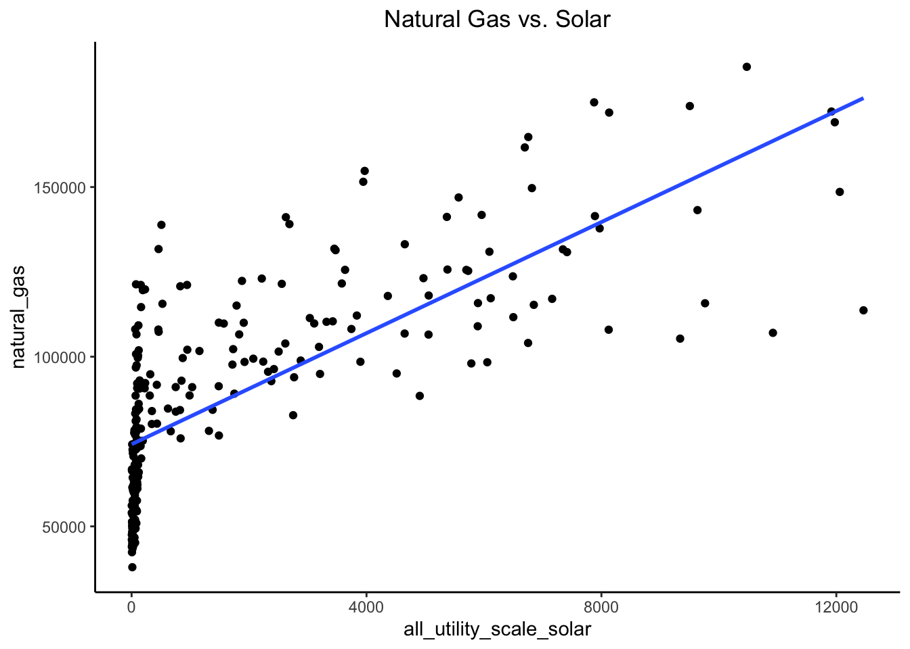
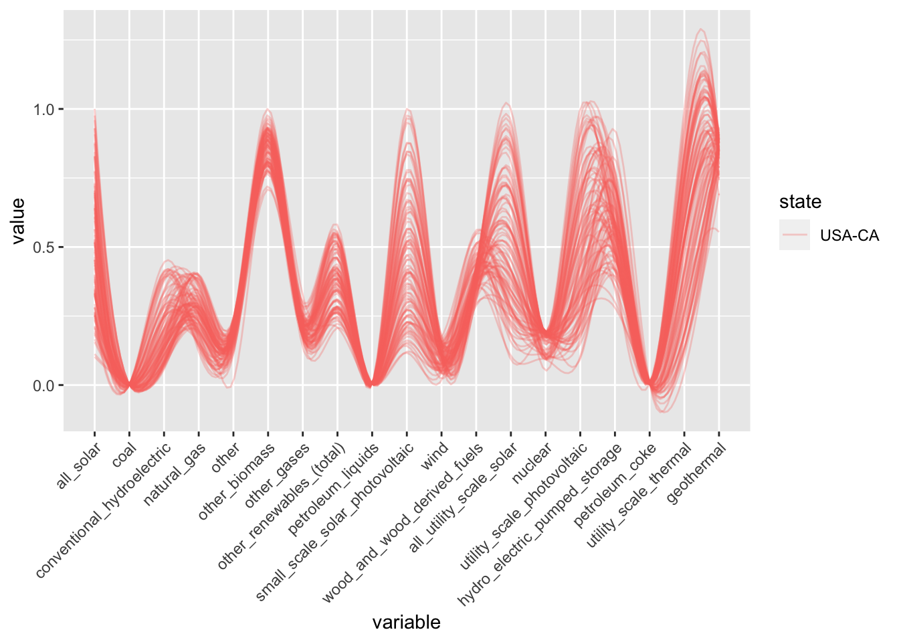
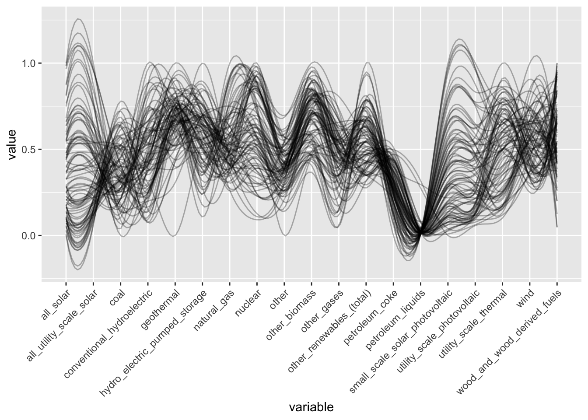

Chapter 7 Conclusion
library(tidyverse)
library(data.table)
library(d3r)
library(parcoords)
library(GGally)
library(janitor)
library(egg)
library(ggpubr)find_missing_patterns <- function(df, aggregation = 'count'){
#find missing patterns
missing_patterns <- data.frame(is.na(df)) %>%
group_by_all() %>%
count(name = "count", sort = TRUE) %>%
ungroup()
#create g1
missing_patterns_sums <- df %>%
summarise(across(everything(), ~ sum(is.na(.)))) %>%
pivot_longer(cols = names(df), names_to='name',values_to='value') %>%
arrange(desc(value))
if (aggregation=='percent'){
total_sum<-length(row.names(df))
missing_patterns_sums$value<- missing_patterns_sums$value*100/total_sum
print(total_sum)
y_label = 'percent rows \n missing'
}
else{
y_label = 'num rows \n missing'
}
column_reorder <- missing_patterns_sums$name
g1 <- ggplot(missing_patterns_sums, aes(x=fct_reorder(name, -value), y=value))+
geom_bar(stat='identity', fill='#9eb7ee') +
scale_y_continuous(limits=c(0, max(missing_patterns_sums$value)), expand=c(0,0)) +
xlab('') +
ylab(y_label) +
ggtitle('Missing value patterns') +
theme(panel.border = element_rect(colour = "black", fill=NA, size=.5),
panel.background = element_rect(fill = "white"),
panel.grid.minor.x = element_blank(),
panel.grid.minor.y = element_blank(),
panel.grid.major.x = element_blank(),
panel.grid.major.y = element_line(color='darkgray', size=.1)) +
theme(axis.text.x = element_text(angle = 45, vjust = 1, hjust=1)) +
theme(aspect.ratio = .25)
#Create g3
missing_patterns_count <- missing_patterns %>% mutate_all((as.integer)) %>% adorn_totals("col")
missing_patterns_count$col <- as.factor(ifelse(missing_patterns_count$Total - missing_patterns_count$count == 0 , 1, 0.5))
missing_patterns_count$id <- row.names(missing_patterns_count)
if(aggregation=='percent'){
missing_patterns_count$count<-missing_patterns_count$count*100/sum(missing_patterns_count$count)
x_label = 'percent rows'
}
else{
x_label = 'row count'
}
pattern_id <- missing_patterns_count %>% filter(col == 1) %>% select(id) %>% as.character()
missing_patterns_count$id <- factor(missing_patterns_count$id)
missing_patterns_count$id <- fct_relevel(missing_patterns_count$id, paste(sort(as.integer(levels(missing_patterns_count$id)), decreasing = TRUE)))
g3 <- missing_patterns_count %>%
#rowid_to_column(var="pattern") %>%
#mutate(pattern = factor(pattern)) %>%
ggplot(aes(y=fct_reorder(id, -desc(count)), x=count)) +
geom_bar(stat='identity', fill='#9eb7ee',aes(alpha = factor(missing_patterns_count$col))) +
scale_x_continuous(limits=c(0, max(missing_patterns_count$count)), expand=c(0,0)) + #, breaks = seq(0,max(missing_patterns$count), 5) if want to have the y axis break on 5s
ylab('') +
xlab(y_label) +
theme(panel.border = element_rect(colour = "black", fill=NA, size=.5),
panel.background = element_rect(fill = "white"),
panel.grid.minor.x = element_blank(),
panel.grid.minor.y = element_blank(),
panel.grid.major.y = element_blank(),
panel.grid.major.x = element_line(color='darkgray', size=.1),) +
scale_alpha_manual(values=c("0.5"=0.5,"1"=1),guide="none") +
theme(aspect.ratio = 4)
#create g2
main_plot_df <- missing_patterns %>%
select(-c(count)) %>%
as_tibble() %>%
rowid_to_column(var="Y") %>%
gather(key="X", value="Z", -1)
main_plot_df$X <- as.factor(main_plot_df$X)
main_plot_df$Y <- as.factor(main_plot_df$Y)
main_plot_df$X <- fct_relevel(main_plot_df$X, column_reorder)
main_plot_df$Y <- fct_relevel(main_plot_df$Y, rev(levels(main_plot_df$Y)))
main_plot_df$Z <- as.factor(ifelse(main_plot_df$Y == pattern_id, .5, main_plot_df$Z))
g2 <- ggplot(main_plot_df, aes(X, Y, fill= Z)) +
geom_tile(color='white') +
theme(legend.position="none") +
scale_fill_manual(values=c('#cacaca', 'darkgray', '#b2a0e1')) +
annotate("text",x=length(unique(main_plot_df$X))/2,y=length(unique(main_plot_df$Y))-as.integer(pattern_id)+1,label='complete cases') +
xlab('Variable') +
ylab('Missing Pattern') +
theme_classic() +
theme(legend.position = "none") +
theme(axis.text.x = element_text(angle = 45, vjust =1, hjust=1)) +
coord_equal() + theme(aspect.ratio = length(row.names(missing_patterns))/(length(names(missing_patterns))-1))
#Arrange graphs
blank <- ggplot() +
geom_point(aes(1,1), colour="white") +
theme(
plot.background = element_blank(),
panel.grid.major = element_blank(),
panel.grid.minor = element_blank(),
panel.border = element_blank(),
panel.background = element_blank(),
axis.title.x = element_blank(),
axis.title.y = element_blank(),
axis.text.x = element_blank(),
axis.text.y = element_blank(),
axis.ticks = element_blank()
)
ggarrange(g1,blank,g2,g3,ncol=2,nrow=2,widths = c(16,4),heights=c(1,4))
#return(missing_patterns_count)
}#https://www.eia.gov/electricity/data/browser/#/topic/0?freq=M&start=200101&end=202108&ctype=linechart<ype=pin&pin=&maptype=0
df <- read.csv('data/raw/monthly_fuel_generation_by_state_full.csv')
df$fuel <- trimws(df$fuel)
df$date <- as.Date(df$date)
df[is.na(df$thousand_megawatthours),]$thousand_megawatthours <- 0
df$fuel <- gsub(" ", "_", df$fuel)
df$fuel <- gsub("-", "_", df$fuel)way to view the n/a columns for dates
test <- df %>% pivot_wider(id_cols = c(state, fuel), names_from= date, values_from = thousand_megawatthours)
test## # A tibble: 744 × 250
## state fuel `2021-08-01` `2021-07-01` `2021-06-01` `2021-05-01` `2021-04-01` `2021-03-01` `2021-02-01`
## <chr> <chr> <dbl> <dbl> <dbl> <dbl> <dbl> <dbl> <dbl>
## 1 USA-AL coal 2998. 2961. 2019. 1888. 1584. 2279. 2400.
## 2 USA-AK coal 70.6 83.0 74.7 68.5 41.4 66.3 62.1
## 3 USA-AZ coal 1600. 1455. 1404. 986. 773. 564. 1169.
## 4 USA-AR coal 2878. 2757. 2056. 1274. 767. 1337. 1936.
## 5 USA-CA coal 25.1 25.6 26.1 24.8 25.9 28.1 25.2
## 6 USA-CO coal 2334. 2404. 2113. 1401. 1620. 2050. 2224.
## 7 USA-CT coal 0 0 0 -1.12 -1.22 -2.21 115.
## 8 USA-DE coal 55.5 53.4 27.9 -2.53 9.54 74.8 47.7
## 9 USA-FL coal 2159. 1770. 1918. 1873. 1503. 1518. 1596.
## 10 USA-GA coal 3202. 2767. 2739. 1460. 865. 677. 2718.
## # … with 734 more rows, and 241 more variables: 2021-01-01 <dbl>, 2020-12-01 <dbl>, 2020-11-01 <dbl>,
## # 2020-10-01 <dbl>, 2020-09-01 <dbl>, 2020-08-01 <dbl>, 2020-07-01 <dbl>, 2020-06-01 <dbl>, 2020-05-01 <dbl>,
## # 2020-04-01 <dbl>, 2020-03-01 <dbl>, 2020-02-01 <dbl>, 2020-01-01 <dbl>, 2019-12-01 <dbl>, 2019-11-01 <dbl>,
## # 2019-10-01 <dbl>, 2019-09-01 <dbl>, 2019-08-01 <dbl>, 2019-07-01 <dbl>, 2019-06-01 <dbl>, 2019-05-01 <dbl>,
## # 2019-04-01 <dbl>, 2019-03-01 <dbl>, 2019-02-01 <dbl>, 2019-01-01 <dbl>, 2018-12-01 <dbl>, 2018-11-01 <dbl>,
## # 2018-10-01 <dbl>, 2018-09-01 <dbl>, 2018-08-01 <dbl>, 2018-07-01 <dbl>, 2018-06-01 <dbl>, 2018-05-01 <dbl>,
## # 2018-04-01 <dbl>, 2018-03-01 <dbl>, 2018-02-01 <dbl>, 2018-01-01 <dbl>, 2017-12-01 <dbl>, 2017-11-01 <dbl>, …View which fuel types are missing for each state
test2 <- df %>% group_by(state, fuel) %>% summarize(total_thousand_mwh = sum(thousand_megawatthours)) %>% pivot_wider(id_cols = c(state), names_from= fuel, values_from = total_thousand_mwh)
test2## # A tibble: 50 × 20
## # Groups: state [50]
## state all_solar coal conventional_hydroelectric natural_gas other other_biomass other_gases `other_renewabl…
## <chr> <dbl> <dbl> <dbl> <dbl> <dbl> <dbl> <dbl> <dbl>
## 1 USA-AK 26.4 13031. 30794. 70596. -22.2 473. 5.40 1846.
## 2 USA-AL 45.2 1125527. 196068. 774498. 1595. 550. 2682. 70816.
## 3 USA-AR 1332. 527850. 67318. 248338. 585. 1411. NA 32714.
## 4 USA-AZ 52434. 750190. 141540. 656740. 2838. 834. NA 48860.
## 5 USA-CA 267832. 29128. 618822. 2129740. 13147. 52140. 32926. 751219.
## 6 USA-CO 11312. 664850. 34529. 258381. 786. 1201. 15.5 117353.
## 7 USA-CT 4281. 41147. 8663. 279473. 14041. 13932. 29.7 16498.
## 8 USA-DE 1180. 49192. NA 78563. 16.8 1283. 5907. 1821.
## 9 USA-FL 24775. 1037854. 4133. 2584653. 64321. 48265. 153. 113078.
## 10 USA-GA 7448. 1185176. 65448. 631582. 1325. 4199. NA 98044.
## # … with 40 more rows, and 11 more variables: petroleum_liquids <dbl>, small_scale_solar_photovoltaic <dbl>,
## # wind <dbl>, wood_and_wood_derived_fuels <dbl>, all_utility_scale_solar <dbl>, nuclear <dbl>,
## # utility_scale_photovoltaic <dbl>, hydro_electric_pumped_storage <dbl>, petroleum_coke <dbl>,
## # utility_scale_thermal <dbl>, geothermal <dbl>test3 <- test2
test3$state <- NULL
find_missing_patterns(test3, 'percent')## [1] 50
#ggsave('state-fuel type-missing patterns.png', height = 10, width = 10, units = "in")df %>% filter(state == 'USA-AL') %>%
ggplot(aes(x = date, y = thousand_megawatthours, color = fuel)) +
geom_line() #+ #facet_wrap(~fuel)#, ncol = 1, scales="free")
#could do a boxplot for each state, or even a cleveland dot plotdf %>% filter(state == 'USA-CA') %>%
group_by(fuel) %>% mutate(thousand_megawatthours_norm = scale(thousand_megawatthours)) %>%
ggplot(aes(x = date, y = thousand_megawatthours_norm)) +
facet_wrap(~fuel) +
geom_line()
df %>%
group_by(fuel, date) %>% summarise(thousand_megawatthours = sum(thousand_megawatthours)) %>% filter(fuel %in% c('all_solar', 'all_utility_scale_solar', 'coal','natural_gas', 'wind')) %>%
ggplot(aes(x = date, y = thousand_megawatthours, color = fuel)) +
geom_line() Missing values: “all solar” values don’t begin until 2015; however, “all utility scale solar” has values beginning in 2001. The aggregation is off here for the all_utility_scale_solar section
df %>% group_by(fuel, date) %>%
summarise(thousand_megawatthours = sum(thousand_megawatthours)) %>%
filter(fuel %like% 'solar') %>%
ggplot(aes(x = date, y = thousand_megawatthours, color = fuel)) +
geom_line() for the plots to make sense, need to set the all solar value to be all_utility_scale_solar for the time period before small_scale_solar_photovoltaic had values
#df$thousand_megawatthours[df$]look at which fuel sources are correlated
df %>% select(c(fuel, date, thousand_megawatthours)) %>%
group_by(fuel, date) %>%
summarise(thousand_megawatthours = sum(thousand_megawatthours)) %>% ungroup() %>%
pivot_wider(names_from=fuel, id_cols = date, values_from = thousand_megawatthours) %>%
ggplot(aes(x=all_utility_scale_solar, y = natural_gas)) +
geom_point() +
geom_smooth(method = "lm", se = FALSE) +
ggtitle("Natural Gas vs. Solar") +
theme(plot.title = element_text(hjust = .5),
panel.grid.major = element_blank(),
panel.background = element_blank(),
axis.line = element_line(colour = "black")) plot of percent growth for each fuel type over the entire time period - could do this as a cleveland dot plot - should probably make the values annualized before doing the growth values becuase the numbers are seasonal
df %>% select(c(fuel, date, thousand_megawatthours)) %>%
group_by(fuel, date) %>%
summarise(thousand_megawatthours = sum(thousand_megawatthours)) %>% ungroup() %>%
pivot_wider(names_from=fuel, id_cols = date, values_from = thousand_megawatthours) %>%
ggparcoord(columns=c(array(2:20)), scale= "uniminmax", alphaLines = .3, splineFactor = 9) +
theme(axis.text.x = element_text(angle = 45, vjust = 1, hjust=1))
comp_df <-df %>% select(c(state, fuel, date, thousand_megawatthours)) %>%
group_by(state, fuel, date) %>%
summarise(thousand_megawatthours = sum(thousand_megawatthours)) %>% ungroup() %>%
pivot_wider(names_from=fuel, id_cols = c(date, state), values_from = thousand_megawatthours)
ggparcoord(comp_df, columns=c(array(3:21)), scale= "uniminmax", alphaLines = .3, splineFactor = 9, groupColumn = "state") +
theme(axis.text.x = element_text(angle = 45, vjust = 1, hjust=1))
Checking correlation between financial data and amount of energy produced
#Why is hydro negative?
unique(df$fuel)## [1] "coal" "petroleum_liquids" "petroleum_coke"
## [4] "natural_gas" "other_gases" "nuclear"
## [7] "conventional_hydroelectric" "other_renewables_(total)" "wind"
## [10] "all_utility_scale_solar" "utility_scale_photovoltaic" "utility_scale_thermal"
## [13] "geothermal" "wood_and_wood_derived_fuels" "other_biomass"
## [16] "hydro_electric_pumped_storage" "other" "all_solar"
## [19] "small_scale_solar_photovoltaic"Strip off USA- from state col and plot them on a map